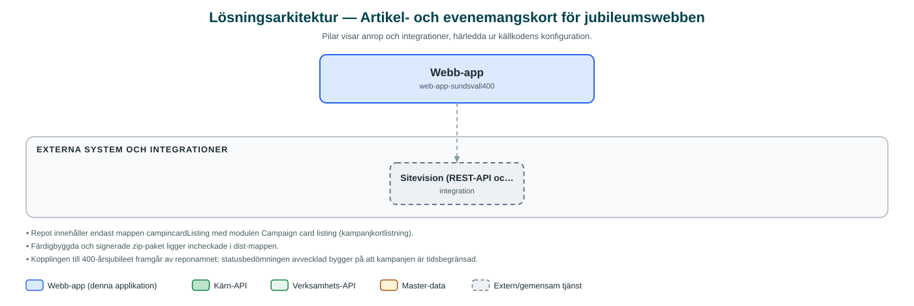

Artikel- och evenemangskort för jubileumswebben
En Sitevision-modul som visar nyheter och evenemang som kortflöden på webbplatsen för Sundsvalls 400-årsjubileum.
Om applikationen
Detta är en tilläggsmodul (WebApp) till publiceringsverktyget Sitevision som togs fram för Sundsvalls 400-årsjubileum. Modulen hämtar artiklar ur ett valt arkiv på webbplatsen och visar dem som ett flöde av kort – antingen som en lista eller som ett bildspel.
Redaktören väljer i modulens inställningar vilket arkiv som ska visas, hur många artiklar som ska ingå och vilken korttyp som ska användas (evenemangskort, avlånga eller kvadratiska kort). För evenemang visas datum, tid och plats, och passerade evenemang filtreras bort automatiskt.
Eftersom modulen är knuten till en tidsbegränsad jubileumskampanj bedöms den inte längre vara i aktiv utveckling; senaste ändringen gjordes hösten 2024.
Det här stödjer applikationen
- Kortflöde av artiklar – Visar nyhets- och evenemangsartiklar från ett Sitevision-arkiv som kortbaserat flöde.
- Flera korttyper – Redaktören kan välja mellan evenemangskort, avlånga och kvadratiska kort.
- Lista eller bildspel – Flödet kan visas som löpande lista med oändlig skroll eller som bildspel med begränsat antal artiklar.
- Automatisk evenemangsfiltrering – Kommande evenemang sorteras på startdatum och passerade datum visas inte.
Teknisk dokumentation
Nedan beskrivs hur applikationen är uppbyggd, vilka API:er den använder och vad som krävs för att driftsätta den. Informationen är härledd ur källkoden och dess konfiguration på GitHub.
Arkitektur

Applikationen består av en webbaserad frontend (React 17, Sitevision WebApp (sitevision-scripts), Sass) och en backend (Serverskript i Sitevision (server-side rendering)) som utvecklas i samma kodbas. Övriga integrationer som förekommer i koden: Sitevision (REST-API och sökindex).
Teknikstack
- Frontend: React 17, Sitevision WebApp (sitevision-scripts), Sass
- Backend: Serverskript i Sitevision (server-side rendering)
API-beroenden
Inga prenumerationer på kommunens API-plattform hittades i källkodens konfiguration.
Konfiguration och driftsättning
- Modulinställningar i Sitevision: val av arkiv, korttyp, listtyp, max antal artiklar och taggtext
- Byggs och signeras med Sitevisions utvecklarverktyg (create-addon, sign, deploy-prod)
Noterbart ur källkoden
- Repot innehåller endast mappen campincardListing med modulen Campaign card listing (kampanjkortlistning).
- Färdigbyggda och signerade zip-paket ligger incheckade i dist-mappen.
- Kopplingen till 400-årsjubileet framgår av reponamnet; statusbedömningen avvecklad bygger på att kampanjen är tidsbegränsad.
Källkod
Källkoden är öppen och finns hos Sundsvalls kommun på GitHub. I källkodsförrådet finns även instruktioner för att klona, konfigurera och starta applikationen i egen miljö.